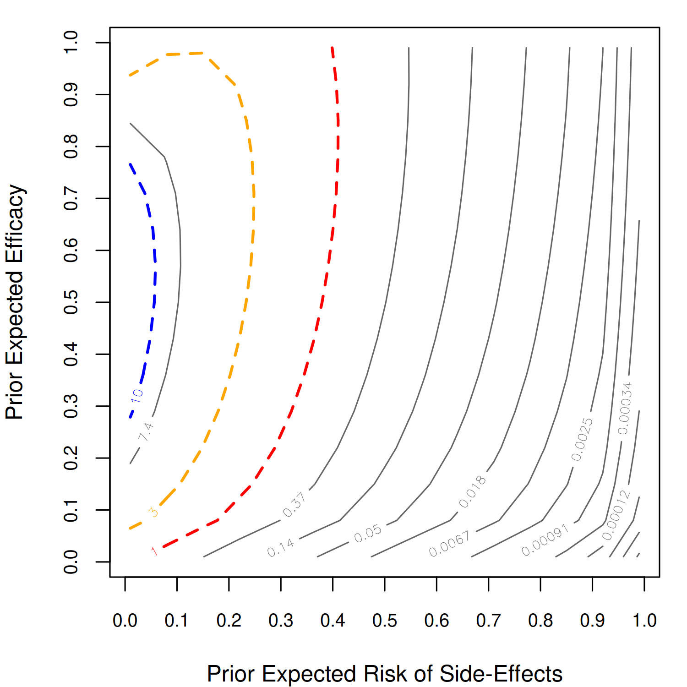

The brease R package implements the BREASE (Baseline Risk, Efficacy, and Adverse Side Effects) framework for Bayesian analysis of randomized controlled trials with binary treatment and binary outcome, as described in:
Irons, N.J. and Cinelli, C. (2025). Causally Sound Priors for Binary Experiments. Bayesian Analysis.
Installation
You can install the development version from GitHub:
# install.packages("devtools")
devtools::install_github("carloscinelli/brease")Basic Usage
# loads package
library(brease)
#> brease: Causally Sound Priors for Binary Experiments
#> Details: Irons and Cinelli (2025). Bayesian Analysis.
#> https://doi.org/10.1214/25-BA1506
# loads data
data("aspirin")
# Aspirin and Myocardial Infarction (Physicians' Health Study)
# 26 MIs in control (N = 11,034), 10 MIs in treatment (N = 11,037)
result <- brease(y0 = aspirin$y0, y1 = aspirin$y1,
N0 = aspirin$N0, N1 = aspirin$N1)
result
#> Bayesian Analysis of Binary Experiment
#> Method: BREASE
#>
#> Data:
#> Control: y0 = 26, N0 = 11034 (rate = 0.0024)
#> Treatment: y1 = 10, N1 = 11037 (rate = 0.0009)
#>
#> Prior:
#> theta0 ~ Beta(1.00, 1.00) [mu0 = 0.50, n0 = 2.0]
#> eta_e ~ Beta(0.30, 0.70) [mue = 0.30, ne = 1.0]
#> eta_s ~ Beta(0.30, 0.70) [mus = 0.30, ns = 1.0]
#>
#> Posterior Summaries:
#> Baseline Risk (theta0) Mean: 0.00233 [0.00149, 0.00334]
#> Treatment Risk (theta1) Mean: 0.00105 [0.00052, 0.0018]
#> Risk Ratio (RR) Mean: 0.475 [0.203, 0.966]
#> Efficacy Fraction (EF) Mean: 0.525 [0.034, 0.797]
#> Odds Ratio (OR) Mean: 0.474 [0.202, 0.966]
#> Risk Difference (RD) Mean: -0.00127 [-0.00243, -5.45e-05]
#>
#> Bayes Factor (BF10): 1.21
#> Bayes Factor (BF01): 0.823
summary(result)
#> Posterior Summaries:
#>
#> mean med lw up
#> theta0 0.00233 0.00230 0.00149 0.00334
#> theta1 0.00105 0.00102 0.00052 0.00180
#> eta_e 0.63991 0.65899 0.08731 0.98633
#> eta_s 0.00026 0.00010 0.00000 0.00112
#> rr 0.47455 0.43954 0.20299 0.96603
#> ef 0.52545 0.56046 0.03397 0.79701
#> or 0.47405 0.43892 0.20250 0.96598
#> rd -0.00127 -0.00128 -0.00243 -0.00005
#>
#> Bayes Factor BF10 = 1.2148
#> Bayes Factor BF01 = 0.8232Sensitivity Analysis
We can examine how the Bayes factor changes across different prior specifications using contour plots:
sens <- bf_seq(y0 = aspirin$y0, y1 = aspirin$y1,
N0 = aspirin$N0, N1 = aspirin$N1,
mus_seq = seq(0.01, 0.99, length = 15),
mue_seq = seq(0.01, 0.99, length = 15))
contour_bf(sens)
Overview
The BREASE framework parameterizes the likelihood of a binary experiment in terms of three clinically meaningful causal quantities:
- Baseline risk (θ0): probability of the event without treatment
- Efficacy (ηe): fraction of would-be cases prevented by treatment
- Side-effect risk (ηs): fraction of would-be non-cases harmed by treatment
The package provides:
- Exact posterior sampling and analytic marginal likelihoods/Bayes factors
- Optional MCMC backends via Stan or JAGS
- Sensitivity analysis tools (contour plots, side-effect sensitivity)
- Comparison methods: Independent Beta and Logit-Transform priors
- Bounds on probabilities of causation
Documentation
For a detailed introduction, see the package vignette.